Overall Chapter Summary
A fierce battle unfolds as Rimuru prepares to face Velda while managing the chaos created by Veldora and Ciel.
Chapter Drift Analysis
Similarity: 0.6924
Drift: 0.3076
Moderate drift. The chapter introduces noticeable development while still staying connected.
Bug Severity Distribution
Story Bugs Found
Veldora's understanding of energy absorption and his abilities seems inconsistent. He attempts to absorb energy and transform it, which is a significant leap in capability without prior indication that he could do so without direct guidance or training.
Appears on timeline:
- matched by evidence: ev_001_001 · Veldora's Recklessness in sc_001 · Rimuru's Preparations for Battle at
Unknown
Type: The Contradiction
Definition: A character acts completely out of line with their established personality traits, or previously known facts are suddenly altered to fit a new scene.
The introduction of the 'Genesis: Veldanava' sword by Velda is abrupt. There is no prior mention of this weapon or its significance in earlier chapters, making its sudden appearance feel unearned.
Appears on timeline:
- matched by evidence: ev_001_001 · Veldora's Recklessness in sc_001 · Rimuru's Preparations for Battle at
Unknown
Type: Missing Details
Definition: A vital piece of information, a key item, or a character’s injury is forgotten, conveniently disappears, or magically reappears between chapters or scenes.
Chloe's previous issues of instability and concern are glossed over in this chapter. Her character appears resolved and supportive without any mention of the conflicts she was facing in previous interactions.
Appears on timeline:
- matched by evidence: ev_001_002 · Rimuru's Confidence in sc_001 · Rimuru's Preparations for Battle at
Unknown
Type: Forgotten Subplots
Definition: A secondary character is introduced with a heavy, specific conflict (like being cursed or having a missing family member), but this thread is completely abandoned before the story ends.
Character Sheet
Summary of character state, current actions, potential future plot hole risks, and acquired items/spells in this chapter.
Character Arc Analysis
Velda
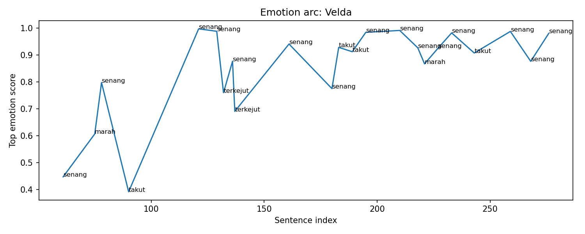
Emotional Arc Summary
Velda's emotional journey is marked by fluctuations between joy, anger, fear, and surprise. Initially feeling confident and excited to confront Rimuru, moments of anger emerge with strategic insights into the battle. However, fear creeps in as Velda witnesses unexpected shifts in the fight.
Action-Based Interpretation
Velda actively engages in the battle, creating a new sword to respond to Rimuru’s advance and reacting to unexpected challenges. His actions, including powerful declarations and reckless swings, reflect a blend of bravado and panic, illustrating his emotional volatility.
Key Turning Point
The key turning point occurs when Velda initially shows surprise and then panic, as Rimuru begins to anticipate his moves, suggesting a shift in the battle’s dynamics.
Narrative Meaning
This emotional arc not only showcases Velda’s internal struggle but also highlights the stakes of the battle, accentuating his character’s depth and vulnerabilities amidst chaos.
Potential Writing Issue
Some emotional spikes, particularly sudden fear following moments of high confidence, lack direct action support, suggesting a need for clearer connections to Velda's experiences in the scene.
Guy
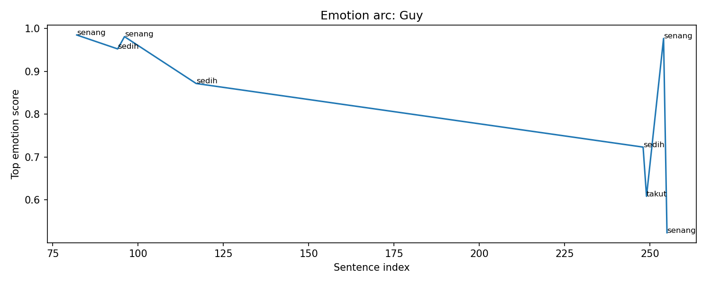
Emotional Arc Summary
Guy experiences a fluctuating emotional journey, moving between joy and sadness. Initially, he feels excited about the battle's potential but quickly transitions into sadness as he reflects on past battles, particularly his history with Milim. As tension builds, fear emerges when an ominous statement is made, suggesting danger ahead.
Action-Based Interpretation
Guy actively assists Ramiris with strengthening the barrier, showing his commitment despite the looming threat. His actions indicate a sense of duty and unity, contrasting with his emotional turmoil as he grapples with uncertainty about the battle's outcome.
Key Turning Point
The emotional arc’s pivotal moment occurs when fear surfaces as others express concern about Guy's statements. This highlights a moment of vulnerability, reflecting inner conflicts about the coming challenges.
Narrative Meaning
This emotional complexity emphasizes the stakes of the upcoming conflict and portrays Guy as a multi-dimensional character, torn between hope and despair, ultimately driving the narrative tension.
Potential Writing Issue
Emotional spikes, particularly the sudden shift to fear, might feel inconsistent without clear contextual support in the actions. Further grounding these emotions in character interactions could strengthen the narrative flow.
Milim
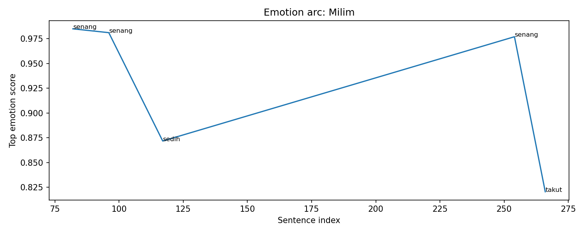
Emotional Arc Summary
Milim experiences a mix of joy and fear throughout the chapter. She begins with a sense of happiness, highlighted by her admiration for Rimuru and her willingness to contribute her powers, indicating hope and optimism. However, as the battle intensifies, a shift toward sadness occurs, reflecting deeper concerns regarding their group's safety.
Action-Based Interpretation
Milim's actions, such as pouring her power into Gaia and her interactions with allies, demonstrate her desire to support the fight against Velda. However, her loud shout with Ramiris reveals an underlying fear, suggesting her awareness of the battle's stakes, contrasting her earlier confidence.
Key Turning Point
The moment when Milim shouts in fear marks a critical emotional shift from joy to anxiety. This signifies her acknowledgment of the gravity of their situation and foreshadows potential consequences of the upcoming confrontation.
Narrative Meaning
This emotional transition deepens Milim's character, showcasing her vulnerability despite her powerful facade. It illustrates the weight of impending conflict and reinforces the theme of camaraderie in the face of danger.
Potential Writing Issue
The abrupt emotional swing from happiness to fear may lack sufficient buildup, risking inconsistency in character portrayal. A smoother transition could enhance emotional resonance.
Ramiris
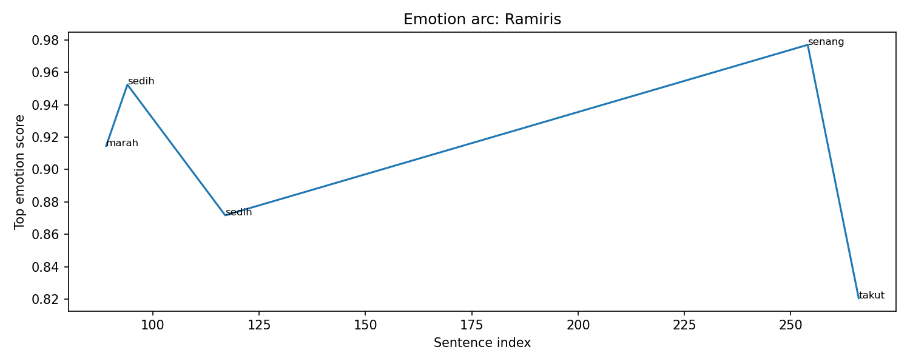
Emotional Arc Summary
Ramiris experiences a complex emotional journey in this chapter, transitioning from anger to sadness, then joy, and finally fear, as the situation evolves around her.
Action-Based Interpretation
Initially, Ramiris is determined, expressing anger about using all her power as she prepares barriers. She is motivated to ensure her allies support her while strengthening the world's barrier. This is a proactive step, portraying her leadership.
Key Turning Point
The turning point occurs when Ramiris collaborates with Guy, leading her to feel sadness when she acknowledges the gravity of their plight, amplifying her emotional stakes as key figures gather around her.
Narrative Meaning
The emotions reflect Ramiris's growth, highlighting her vulnerability amidst the chaos. Her shift from anger and determination to sadness illustrates the weight of her responsibilities.
Potential Writing Issue
However, her subsequent spike of joy when joining forces with Milim may feel inconsistent with the surrounding fear when facing potential danger, suggesting a disconnection between her emotional state and the impending threats.
Velgrynd
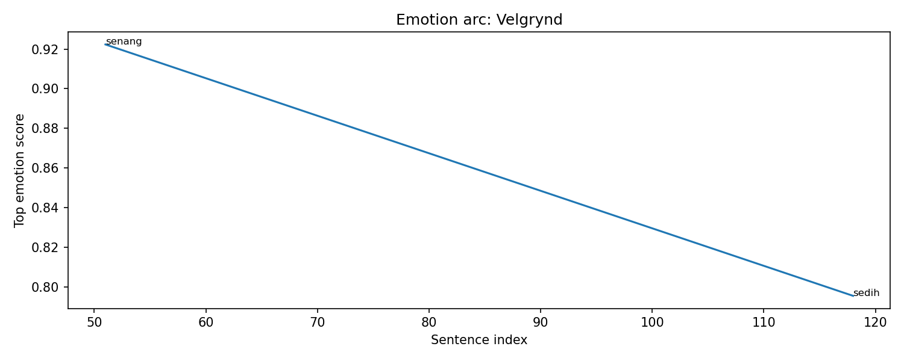
Emotional Arc Summary
Velgrynd's emotional journey fluctuates between moments of confidence and sadness. Initially, she appears strong, confidently standing with her sword, signaling assertiveness. This is countered by an underlying sadness tied to her connection with family, particularly her brother, Velzado.
Action-Based Interpretation
In the battle preparation, Velgrynd's initial demeanor reflects a calm strength as she observes Rimuru readying himself. Her actions indicate a readiness to confront the inevitable chaos, yet the mention of her familial ties brings a sense of melancholy, suggesting emotional burden linked to her role in the conflict.
Key Turning Point
The emotional pivot occurs when Velgrynd's confidence is overshadowed by her reflection on her brother. This duality creates a tension that illustrates her internal struggle—balancing her fierce loyalty to her allies against her emotional attachment to her past.
Narrative Meaning
This emotional complexity emphasizes themes of loyalty and personal sacrifice in the face of overwhelming challenges. It also enriches Velgrynd's character, making her a multi-dimensional figure caught between duty and personal loss.
Potential Writing Issue
The emotional drop into sadness feels somewhat abrupt and could benefit from more narrative support to deepen the connection between her actions and feelings.
Ciel-san
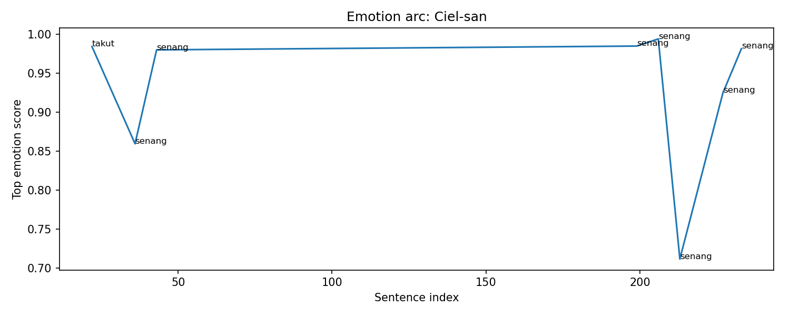
Emotional Arc Summary
Ciel experiences a significant emotional journey, fluctuating primarily between anger and happiness. Initially, her anger serves as a response to the chaos surrounding the battle and her circumstances. As the chapter progresses, her mood transitions to one of joy and confidence, highlighting her competence and emotional control as she engages in strategizing against Velda.
Action-Based Interpretation
Ciel's initial display of anger (index 22) juxtaposes her later expressions of happiness (indices 36, 43, 199) as she cleverly navigates complex situations. The positive actions include her concise strategic contributions, such as sending thoughts to disrupt Velda (index 227), enhancing her assertive role in the conflict.
Key Turning Point
The turning point occurs when Ciel begins crafting strategies that not only bolster morale but also demonstrate her tactical prowess, suggesting an internal resolve that outweighs her earlier anger.
Narrative Meaning
Ciel's emotional evolution underscores her growth as a character, moving from reactive anger to proactive engagement, symbolizing resilience amidst chaos.
Potential Writing Issue
The transition from anger to happiness could feel abrupt if not thoroughly underscored by contextual details, creating a risk of perceived inconsistency in emotional conviction.
Veldora-san
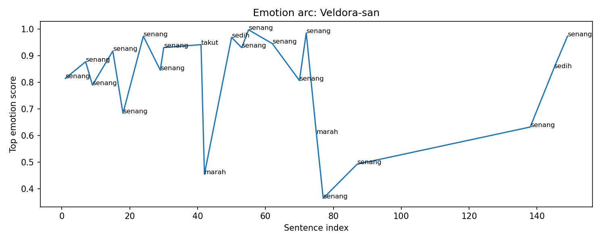
Emotional Arc Summary
Veldora experiences a mix of primarily positive emotions, characterized by happiness, with sudden moments of fear, anger, and sadness as the battle intensifies. His emotional state fluctuates significantly in response to the chaotic events surrounding him.
Action-Based Interpretation
Throughout the chapter, Veldora's emotions often reflect his actions—he confidently engages in combat, yet also shows vulnerability when realizing his powers are waning. His boastful behavior contrasts with moments of introspection and worry for his own and others' safety.
Key Turning Point
A pivotal moment occurs when Veldora acknowledges his limits, leading to feelings of anger and sadness ("Veldora, kamu—"). This moment of self-awareness signifies a shift in his emotional arc, marking a departure from his usual bravado.
Narrative Meaning
The emotional highs and lows enhance the tension of the battle, illustrating Veldora's complexity as a character who grapples with both pride and fear, ultimately enriching the reader's investment in the outcome of the conflict.
Potential Writing Issue
Some spikes in emotion, particularly the shifts from happiness to fear and sadness, may lack strong narrative justification, risking inconsistency in Veldora's emotional journey.
Tuan Rimuru

Emotional Arc Summary
Tuan Rimuru experiences a predominant sense of happiness interspersed with moments of anger and fear. Although he remains generally upbeat, his frustrations emerge in response to Veldora's unexpected actions and the stakes of the battle against Velda.
Action-Based Interpretation
Rimuru prepares strategically for the encounter, engaging with Veldora and adapting to the chaotic situation. His decision to utilize Veldora's essence in his sword reveals confidence, yet his irritation at Veldora's antics showcases a struggle to maintain composure.
Key Turning Point
The shift from happiness to anger occurs as Rimuru contemplates the pressure of the battle, prompting him to mandate Veldora’s contributions while grappling with the risk of going solo against Velda.
Narrative Meaning
Rimuru's emotional evolution reflects the internal conflict of responsibility against the backdrop of an impending battle. His rollercoaster of emotions highlights the high stakes, preparing readers for a climactic confrontation.
Potential Writing Issue
The emotional spikes, particularly transitioning from anger to happiness without significant triggers, may create perceived inconsistencies. Ensuring consistent emotional development relative to plot actions is vital.
Testarossa
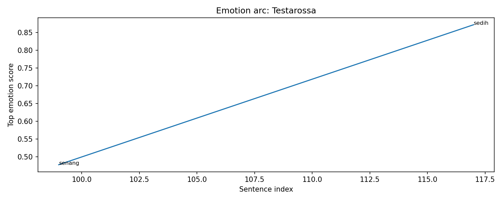
Emotional Arc Summary
In Chapter 245, Testarossa experiences a mix of joy and sadness. Initially, her emotional state is elevated as Diablo offers encouragement, suggesting a moment of camaraderie and support. However, the presence of significant allies like Guy and Milim also evokes a sense of sadness, highlighting the weight of the impending battle.
Action-Based Interpretation
Testarossa's role is more passive in this chapter as she is shielded by Diablo, who takes proactive steps to ensure her safety and bolster morale. This protective action aligns with her emotional state, showing she is valued yet vulnerable amidst chaos.
Key Turning Point
The emotional shift occurs as the group stands united before the battle, yet the mention of their powerful allies underscores an impending loss, emphasizing the stakes involved and the sorrow intermingled with their resolve.
Narrative Meaning
Testarossa's emotional arc reflects the complexity of battle preparation, where hope coexists with the fear of sacrifice. This duality enhances the narrative, presenting a rich tapestry of character dynamics.
Potential Writing Issue
The sudden emotional drop to sadness, despite moments of hope, might feel inconsistent without specific actions or dialogues from Testarossa to directly convey this emotional struggle.
Chloe
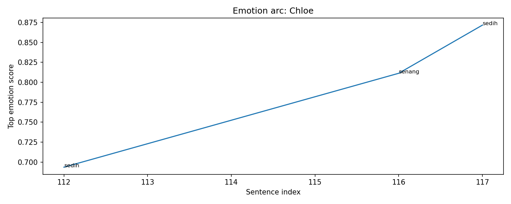
Emotional Arc Summary
Chloe's emotions swing between sadness and happiness throughout the chapter. Initially, there's a note of sadness when she faces the weight of impending chaos, but she later experiences a moment of joy linked to Rimuru's confidence instilling words.
Action-Based Interpretation
Chloe's emotional state reflects her reactions and the events around her. Despite her initial instability, her joy is triggered by the uplifting atmosphere created by Rimuru's preparations, as he rallies allies and boosts morale.
Key Turning Point
The transition from sadness to happiness occurs when Diablo's words bring a smile to Chloe's face, symbolizing her momentary relief amidst the upcoming battle.
Narrative Meaning
This emotional fluctuation underscores the psychological toll of the battle on Chloe and emphasizes the importance of camaraderie and hope in dark times.
Potential Writing Issue
While Chloe's happiness spikes due to external support, the earlier sadness appears slightly disconnected from her actions, hinting at a potential inconsistency in emotional continuity due to lack of deeper introspection.
Diablo
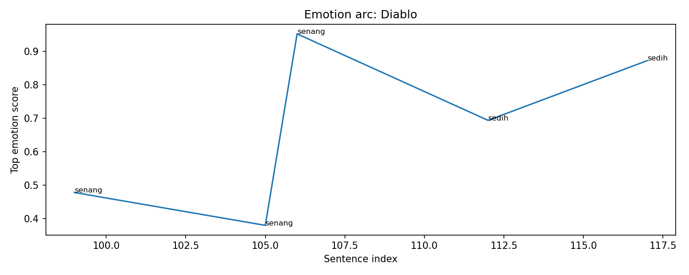
Emotional Arc Summary
In this chapter, Diablo's emotional arc fluctuates between feelings of happiness and sadness. Initially, he exhibits joy as he supports his allies, rallying them with encouraging words. However, there's a notable undercurrent of sadness associated with their uncertain fate in the upcoming battle.
Action-Based Interpretation
Diablo's actions include maintaining the morale of Testarossa and others while reassuring Rimuru. His commitment to rallying allies illustrates his steadfastness and loyalty, reinforcing the positive emotions he conveys.
Key Turning Point
Diablo's emotional shift occurs as he acknowledges the seriousness of the situation, expressing a confidence that contrasts with the looming threat posed by Velda. This recognition, while still instilling belief in Rimuru, introduces a hint of despair regarding the battlefield outcomes.
Narrative Meaning
This emotional complexity enhances the stakes of the battle, portraying Diablo as a multifaceted character who balances optimism with the reality of danger. His initial confidence ultimately becomes tinged with sadness due to shared vulnerabilities.
Potential Writing Issue
The emotional spikes, particularly the high sadness level, might seem inconsistent given his positive actions in support of his allies, indicating a potential need for clearer emotional connections amidst his external actions.
Yuuki
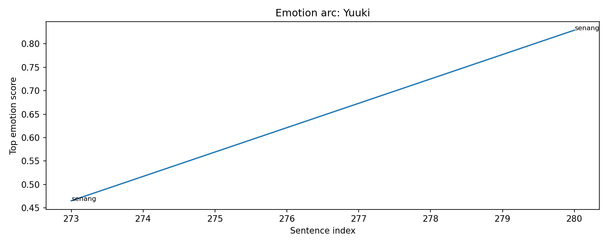
Emotional Arc Summary
Yuuki experiences a transition from a sense of confusion and apprehension to a feeling of happiness and determination. Initially, he is uncertain but finds clarity through his interactions with others, resulting in a boost in morale.
Action-Based Interpretation
Yuuki's actions in this chapter, including affirming his connection with others and engaging in combat, reflect his emotional state. Specifically, as he smiles and pushes forward with Genesis: Veldanava, he exhibits both confidence and joy, indicating growth in his character amidst the chaotic battle.
Key Turning Point
The turning point occurs when Yuuki acknowledges another's presence, marking a shift in his emotions. The act of smiling and pushing forward symbolizes a transition from inner turmoil to active participation in the conflict.
Narrative Meaning
This emotional journey underscores themes of camaraderie and resilience in the face of adversity. Yuuki's shift from confusion to action encapsulates the broader struggle of the characters against overwhelming odds.
Potential Writing Issue
Although Yuuki’s emotions respond positively to his actions, the lack of detailed events surrounding his emotional states may lead to ambiguity. A clearer connection between emotional spikes and specific actions could enhance narrative coherence.
Event Timeline
Lore Graph
Nodes represent characters, scenes, events, items, facts, and locations.